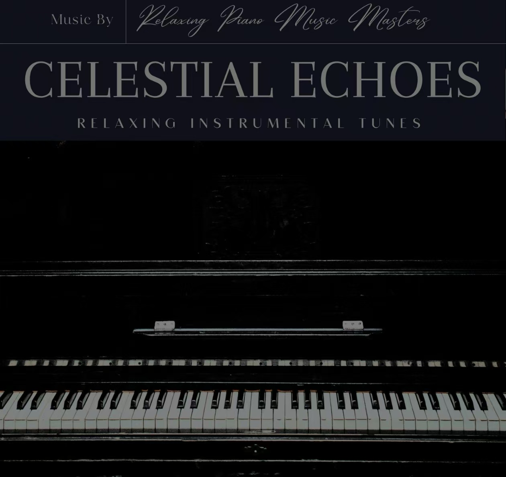

尹逸尘 - 个人总介绍
基本信息
姓名：尹逸尘
年龄：20岁
家乡：四川成都
简介：热爱生活的前端开发学习者，喜欢用代码记录成长，用镜头捕捉美好。
家乡印象
成都是一座充满烟火气的城市，这里有麻辣鲜香的火锅、悠闲的茶馆文化，还有我成长的点点滴滴。
成长经历概览
| 时间 | 阶段 | 关键事件 |
|---|---|---|
| 2010-2016 | 小学 | 就读于成都市天府新区兴隆小学，培养艺术兴趣 |
| 2016-2019 | 初中 | 进入成都七中，开始接触摄影 |
| 2019-2022 | 高中 | 深入学习编程，参加校园技术社团 |
| 2022至今 | 大学 | 主修计算机专业，系统学习Web前端开发 |
兴趣爱好索引

音乐欣赏
喜欢RELAXING INSTRUMENTAL类型音乐，如《CELESTIAL ECHOES》

摄影创作
使用摄影机记录生活，擅长风光与人文摄影
阅读思考
偏好科技与人文类书籍，享受知识带来的成长